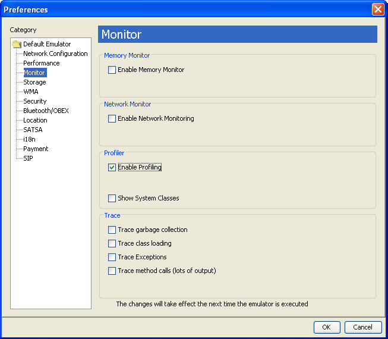
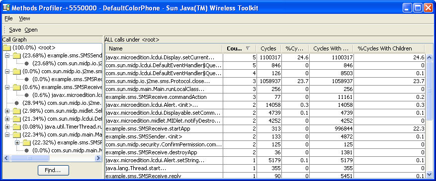
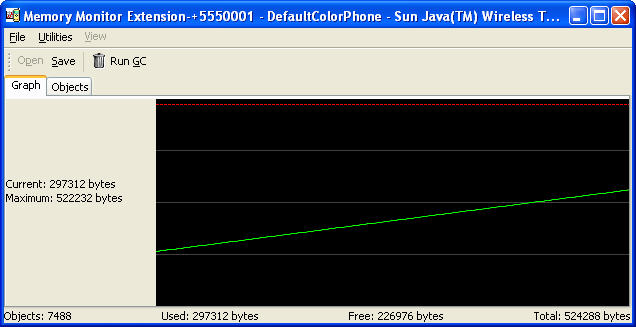
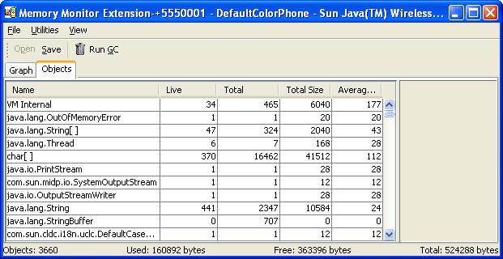
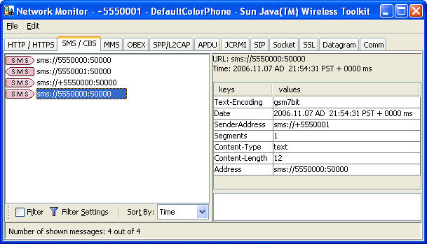

| Sun Java Wireless Toolkit for CLDC User's Guide |
| Sun Java Wireless Toolkit for CLDC User's Guide |
| C H A P T E R 5 |
|
Monitoring Applications |
The Sun JavaTM Wireless Toolkit for CLDC provides several tools to monitor the behavior of your applications. These tools are helpful in debugging and optimizing your code:
| Note - Monitoring features might slow the execution of your application. |
The profiler keeps track of every method in your application. For a particular run, it figures out how much time was spent in each method and how many times each method was called. After you finish running your application and shut down the emulator, the profiler pops up, allowing you to browse through the method call information.
To turn on the profiler, choose Edit > Preferences. See FIGURE 5-1. Click Monitor in the left pane. In the right pane, check Enable Profiling. If you are interested in seeing profiling information for all the system implementation methods, check Show System Classes. Otherwise, the profiler shows only system methods that contain calls to your application methods. Click OK.
FIGURE 5-1 Turning on the Profiler

Now click the Run button to start your application. Interact with your application as you normally would. When you are finished, shut down the emulator. The profiler pops up with information about all the method calls in your application.

The profiler displays two types of information:
| Note - The profiling values obtained from the emulator do not reflect actual values on a real device. |
The call graph shows a hierarchy of method calls. Methods that call other methods are shown as folders. Double-click a method to open it and see the methods it calls. Methods that do not call any other method are shown as gray circles.
You can search for a particular class or method name. Click Find and fill in a name. The search is performed from the current selection in the call graph to the end. If you want to search the entire call graph, check Wrap before you click the Find button.
As you click different nodes in the call graph, the right side of the profiler shows details about the methods for that node.
The right side of the profiler window displays detailed information about methods. You can see the method name, the number of times it was called, and the amount of time that the emulator spent in the method. The execution time is described in four distinct ways:
Click any column to sort by that column. Click a second time to switch the sort between ascending and descending.
The right pane shows the methods contained in the currently selected node in the call graph. If you want to see every method, click on the <root> node in the call graph.
To save your profiler session, click the Save button in the profiler window. Choose a file name.
To load a profiler session, choose File > Utilities. Click Profiler and press Launch. When you select a file, the profiler window appears with all the session information.
Memory is scarce on many MIDP devices. The Sun JavaTM Wireless Toolkit for CLDC includes a memory monitor that makes it easy to examine the memory usage of your application. You can see the total memory used by your application and a detailed listing of the memory usage per object.
To turn on the memory monitor, choose Edit > Preferences. Click on Monitor in the left pane. Check Enable Memory Monitor.
Next time you run the emulator, the memory monitor window appears, displaying a graph of your application's memory usage over time. The memory monitor slows your application startup because every object created is recorded.
FIGURE 5-3 Memory Monitor Graph

The memory monitor graph shows the following information:
Remember, to modify the heap size select Edit > Preferences and choose the Storage tab. See Chapter 3 for details.
To request the system to perform a garbage collection, click Run GC.
To see details about the objects in your application, click the Objects tab in the memory monitor window.
FIGURE 5-4 Memory Monitor Objects Display

A table with the following columns appears:
Click any column header to sort on that column.
You can search for a specific class name by choosing View > Find... from the memory monitor window menu.
To save your memory monitor session, click the Save button. Choose a file name.
To load a memory monitor session, choose File > Utilities. Click Memory Monitor and press Launch. When you select a file, the memory monitor window appears with all the session information.
MIDP applications, at a minimum, are capable of HTTP network connections, but many other types of network connections are also possible. The network monitor provides a convenient way to see the information your application is sending and receiving on the network. This is helpful if you are debugging network interactions or looking for ways to optimize network traffic.
To turn on the network monitor, choose Edit > Preferences. Click Monitor in the left pane. Check Enable Network Monitoring.
Next time you run the emulator, the network monitor window appears.

When your application makes any type of network connection, information about the connection is captured and displayed. The figure shows HTTP requests and responses.
The display on the left side shows a hierarchy of messages and message pieces. Click a message or a portion of a message to see details in the right side of the network monitor. Double-click messages or message portions to expand or collapse them.
Message bodies are shown as raw hexadecimal values and the equivalent text.
| Note - You can examine messages that are still in the process of being sent. Incomplete messages are indicated by bold highlighting in the message tree. |
Filters are useful for examining some subset of the total network traffic. Filter settings are specific to the network protocol used.
Press the Filter Settings button to use the filter. Change the filter settings to suit your needs.
When you are done entering filter settings, press OK to return to the network monitor. The Filter checkbox is checked, indicating that a filter is in use. To disable the filter and see all messages, uncheck the checkbox.
To arrange the message tree in a particular order, click on the Sort By combo box and choose a criteria.
To save your network monitor session, choose File > Save or File > Save As from the network monitor window menu. Choose a file name.
To load a network monitor session, choose File > Utilities. Select Network Monitor from the list and press Launch. When you select a file, the network monitor window appears with all the session information.
To remove all messages from the network monitor, choose Edit > Clear from the network monitor menu.
| Sun Java Wireless Toolkit for CLDC User's Guide |
Copyright © 2007, Sun Microsystems, Inc. All Rights Reserved.